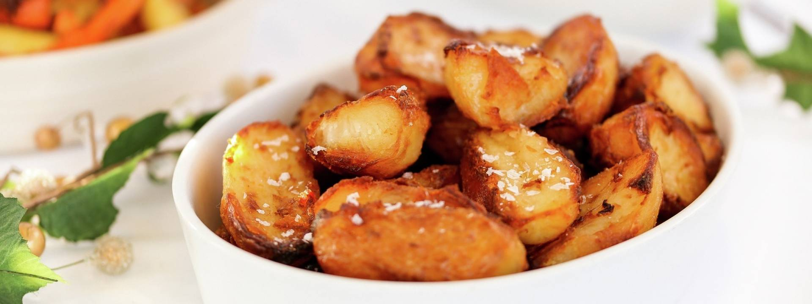

Description
Crispy on the outside and fluffy on the inside, these roast potatoes are the ultimate side dish.
The secret lies in par-boiling the potatoes, roughing up their edges, and roasting them in hot oil for a golden,
crispy finish. A sprinkle of sea salt and fresh rosemary adds the perfect touch of flavor. Ideal for a Sunday roast or any special occasion.
Ingredients
- 1.2kg floury potatoes, such as Maris Piper or King Edward
- 100g goose or duck fat (or olive oil)
- 2 tbsp semolina
- 2 garlic cloves
- Few rosemary sprigs
- Sea salt and freshly ground black pepper
Steps
-
Preheat the oven to 200°C/Fan 180°C/Gas 6.
Peel the potatoes, chop into large chunks and place in a large saucepan of cold salted water.
Bring to the boil then simmer for about 6 minutes.
- Meanwhile, add the goose fat (or duck fat or oil) to a large roasting tray and place in the oven to heat up.
-
Drain the potatoes in a colander and give them a gentle shake to fluff up the edges.
Sprinkle over the semolina, shake again to coat evenly then leave to steam dry for 5 minutes.
Leave the garlic cloves whole but crush lightly with the back of your hand or the flat side of a large knife.
- Carefully add the potatoes to the hot tray along with the garlic and rosemary. Toss to coat in the fat and spread out in a single layer so they cook evenly.
- Roast for 40-45 minutes, turning every 15 minutes, until crisp and golden brown. Season with sea salt and freshly ground black pepper to serve.
Back